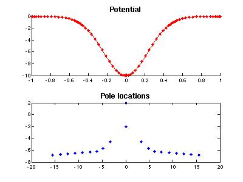

MatScat: MATLAB Codes for 1D Potential Scattering
Introduction
MatScat is a collection of MATLAB codes to compute resonance poles and scattering of plane waves for the one-dimensional Schrodinger operator with a compactly supported potential. The code uses a spectral method to discretize the Schrodinger equation on a finite interval, together with boundary conditions that describe the solution outside that interval.
Download
To get started with Matscat, unpack the tarball (tar -xzf matscat1d-2006-10-25.tar.gz), change to the newly-created directory, and run the demo program.
Correspondence
Bug reports and feature requests related to MatScat should be sent to